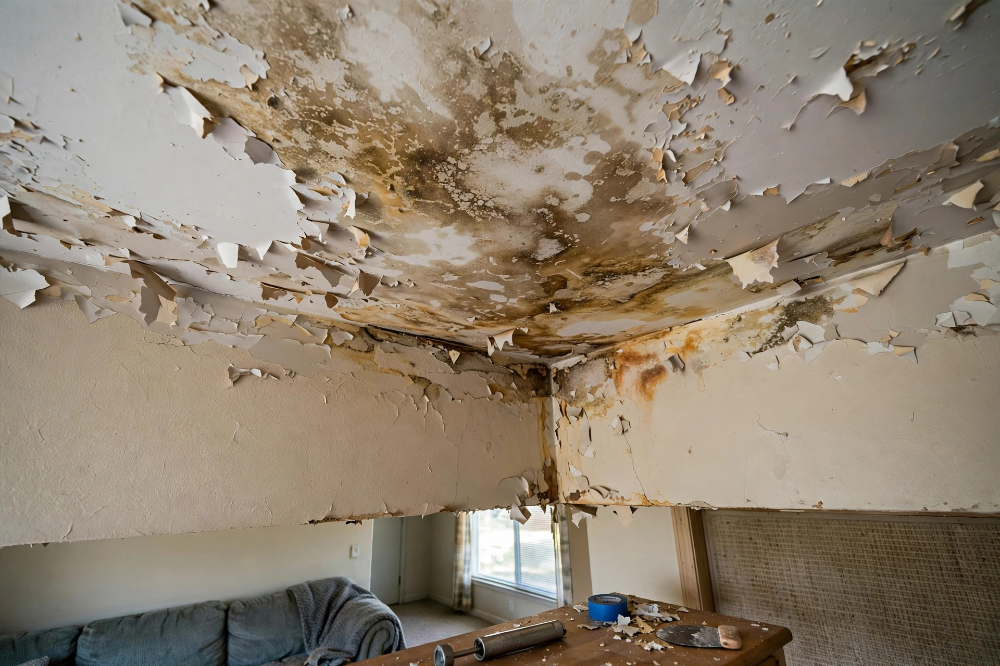

Ceiling Water Damage Repair in Kuna, ID
A ceiling stain is a map of where water has been — and in Kuna's two-story subdivisions, the usual suspects are upstairs bathrooms, water-heater platforms, and roof penetrations over bonus rooms. We trace the path, stop the source, and rebuild the ceiling to disappear.
What you get in writing
Every ceiling job leaves a paper trail — useful for insurance, for resale disclosure, and for your own records.
Moisture map
Readings from the ceiling, adjacent walls, and the space above, showing the full wet boundary — not just the stain you called about.
Source report
What leaked, where, and what was done to stop it. If a plumber or roofer did the source repair, their scope is referenced.
Photo record
Before, during, and after photos of the opened ceiling, the source, and the finished repair.
Dry verification
Final moisture readings proving the cavity is dry before close-up. No new board goes over damp framing.
A stain with a story
Typical scenario (illustrative example — not a past job)
A Kuna homeowner spots a yellowing stain spreading across the living-room ceiling below the kids' bathroom. The inspection finds the shower's grout failed and water has been migrating along a joist for weeks, soaking the insulation. The plumber reseals the shower, the wet bay gets opened and dried, and the ceiling is rebuilt with matching knockdown texture.
What the fix includes
| Step | What happens |
|---|---|
| Source trace | Moisture mapping finds the leak path before any drywall is cut. |
| Source repair | Plumbing fix, pan replacement, or flashing repair — the leak stops first. |
| Damaged removal | Sagging or mold-bearing drywall and wet insulation come out. |
| Rebuild | New board, texture match, prime, and paint to blend. |

What leaks onto Kuna ceilings
Upstairs bathrooms
Shower pans, toilet seals, and supply lines. The most frequent source in two-story builds — water follows joists and appears feet from the leak.
Water heater platforms
Second-floor laundry and heater closets. A failed pan drain turns a small leak into a ceiling event below.
Roof penetrations
Vent boots and flashing over bonus rooms. Wind-driven rain in Kuna's open terrain finds every weak seal.
Ceiling clues and what they mean
Yellow-brown rings
Classic dried leak marks. The water stopped — or paused. The source needs confirming before paint goes on.
Bubbling paint
Active moisture pushing paint off the drywall. There is water moving now, not last year.
Sagging between joists
Saturated drywall losing strength. Keep clear below and treat it as urgent.
Musty smell with no stain
Water traveling inside the ceiling cavity without breaking through yet. Thermal imaging finds it.
Trace it, stop it, fix it
The stain is the symptom — we find the source and rebuild the ceiling to vanish.
Open 24 hours · Kuna and the Treasure Valley